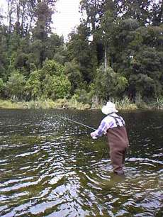

釣行日誌 ＮＺ編 「その後で」
沈木の幹から
1999/12/16(THU)-4
「晴れていればサザンアルプスがきれいに見えるんだけどなぁ....」
と、ボートにランチボックス一式を再び積み込みながらブリントが残念がった。とはいえ、ほとんど無風に静まり返った湖は、若干の曇天ではあるが、キャスティング能力の低い私にはうってつけの釣り日和である。たまにはこうした湖岸にイーゼルを据えることもあるというブリントは、いろんな絶景のスポットを知っているらしかった。今度の湖は朝のよりも数倍大きく、対岸は少し霞んで見えた。
「左手に見える浅場か、それとも対岸にある流れ込みか、どっちを攻めたい？」
と、彼が訊ねるので、今朝の湖で流れ込みが良かったので素人考えで「流れ込み！」とリクエストする。
「ようし、掴まってろよ！」
と、彼がスロットルを煽る。岸辺ではそんなに気にならなかったのだが沖ではけっこう波があり、波頭に乗ったボートはザンブざんぶとバウンドし始め、着水するたびに著しい飛沫を風防越しに跳ね上げる。見る間にサンドフライよけのネットから帽子からサングラスからずぶ濡れとなり、こりゃかなわんということで風防の下にしゃがみ込む。かれこれ10分ほどの疾走が終わったので立ち上がると、ボートはほの暗い、怪しげに静まっ た流れ込みへとアプローチの体勢であった。
流れ込みの周囲には、茶褐色の藻がびっしりと茂っており、ストリーマーの釣りは厳しいように思われた。期待の流れ込みも、両側に葦が密生しており、そのまま原生林の奥深くまで続いているようであった。川幅も数メートルほどしかなく、上流にボートを進めてゆくとＵターン出来なくなりそうなほど狭かった。石や砂利のある渓流が音を立てて流れ込んでいることを期待した二人にとってはいささか当ての外れた思いである。
まぁ、何が起こるかわからないので葦や藻に注意しながら20分ほどキャストを続けたのだが、ついに！！！は起こらず緩慢な？？？が続くだけであった。何か思うところのあるらしいブリントが、
「うーん、芳しくないな。よし、次の岬に行こう」
と、船外機を始動させる。
岬の先端にボートを泊め、しばし歩いて浅場を攻めることとなった。あいにく野生の呼び声を聞いたのでちょっと失礼して藪に消えると、ブリントが
「ちょっと竿を貸りるよ」
と、私の竿で代わりに釣り始めた。

ボートに戻ってみると、ブリントは紅茶とビスケットを広げており、ちょっとお茶にしようと言う。岸辺に腰を降ろして、年季の入ったサーモスの魔法瓶からお茶を入れていると、彼は、
「ゴウなぁ、魚はいるから心配しなくてもいいからな」
と言う。どうやらこの湖は、ジョーンズさんやヘンリーさんの話に出てきた「あの湖」であるらしい。
.....だとすれば、ポイントはどこに？
岬をあきらめたブリントが舳先を向けたのは彼が最初に話していた浅場である。砂利の湖底がなだらかなカケ上がりになっており、黒々とした沈木がまばらに横たわっている。
さあ、再びしらみつぶしのキャストが始まる。ボートのスピードがちょうどめぼしいポイントを攻めるタイミングと合っており、心地よいリズムが生まれる。なるほど、魚影は見違えるほど濃くなり、少々小さめではあるが元気の良いブラウントラウトがラビットを追い始めた。が、どうやらキャピキャピと後を追ってくるのはあまり食い気のない鱒らしく、午前中のように食い気のあるヤツは姿も見せずにかぶりつくのだと想像された。
朝から何百回とキャストしたため、恥ずかしいことに薬指の辺りにマメが出来てしまい、ヒリヒリと痛むのだがそんなことは言ってはいられない、次のポイント、次のキャストを試みるだけである。
マメは痛むものの、できるだけ少ないフォルスキャストで、ラインのシュートを最大限に利用し、思ったところまでフライを届ける勘も身に付いてきた。無論、ブリントが私の技量を見切って最適の位置にボートを進めてくれることに依るところが大きい、というかほとんどそれに尽きるのであるが。
ギィ.........ギィーッ...........と静かにボートは湖岸沿いを進んでゆく。岸辺の藻の切れ目、立木の枝の陰、倒木の幹の裏などなど、思ったところにフライを投げるのはこの上なく楽しい。たまに枝を釣ったりするのだが、ひょいっと煽ると奇跡的にフライが外れて望外の喜びを与えてくれた。外れないときにはブリントが迅速かつ密かにボートを寄せてくれるのでなんなく外すことが出来る。
ニュージーランド南島、夏、無風。曇り時々晴れ。原生林に囲まれた湖で、ボートからのキャスティングによる鱒釣り。ルアーも好きな私にとっては至上の喜びと言って良い釣りである。
黒ずんだ湖面から倒木が斜めに突き出ているポイントであった。
枯れた幹の直前を狙ったキャストは少々オーバーし、フライが幹の向こう側に落ちる。急いでラインを手繰り黒い兎の毛皮の一切れが引っかかる前に水中の倒木を泳ぎ越したのを見てから、一、二、三まで数えて沈めリトリーブを始める。うーん、来ないかなぁ......と思っていると、
「どすん」
竿が重くなり、そらよっ！と合わせるとあまり経験したことのない引き方でラインが水面を走り出す。
「ストライク！」
と叫んで余りのラインを巻き取りにかかるがその必要はなく、人差し指で押さえたはずのラインは有無を言わさず水中に消えリールが鳴り出す。錨にラインを結んで水中に投げ込まれたらこんな感じであろう。これはこれはかなり期待できそうだなと思っていると、鱒は最初の突進を終えて、長い持久戦へと持ち込むようである。ブリントはラインが船外機やオールに絡まないよう細心の注意でボートの向きを変え、鱒が沈木や藻に逃げ込まないよう船を沖へ進める。見事なオール捌きである。
９ft６番にしては珍しいキルウェル・プレゼンテーション６番のエクステンション・バットが今となっては頼もしく竿を支えてくれる。鱒はまだまだ弱りそうにない。
「バックリと喰ったなぁ！」
「えーっ？ 見えたんですか？」
「ああ、よく見えたよ。 横殴りでひったくったぜ」
どうやら喰い気のある大物が沈木の影に潜んでいたらしい。リーダーが見えるまでにはまだほど遠く、グリップの上辺りに右手を添えて竿を支えるのが精一杯である。急流で掛けた鱒は何も考える余地を与えず上流か下流へと突進し、華やかな炸裂を披露するのであるが、湖の鱒はひたすら沈黙の圧力と無言の緊張を強いるのであった。ブリントのボートは極めて安定しており、安心して鱒とのやりとりに集中できる。渓流のようにストライク直後から全力での短距離走を強いられることはない。
『焦るなよ、焦るなよ。ネットがあるから大丈夫....』
と自分に言い聞かせる。ラインは水面上を右往左往し、かろうじて巻き取った数メートルのアドバンテージはあっけなくドラグの悲鳴に消えてしまう。
「やや、こりゃいかん。やっこさん船を引っ張ってるぜ！」
冗談か本当か知らないが、ブリントが沖に進めたはずのボートは気が付くとまた岸近くまで寄っており、不吉な倒木が目に入って来る。
「おお、これはこれは。漕がねばならぬ」
いったんはネットを構えていた再び彼が船を沖に進める。鱒は倒木の暗がりに向かって竿を軋ませている。バットを支えていた右手がなんとかリールを巻き取ることができるようになってきた。ジリジリ、ジリジリとラインを巻き、ついにリーダーが水面上に現れる。
『これからが本番だぞ』
黒褐色の湖水の底でぎらり、と、ふいに輝いた黄金色の大きさに畏れを覚える。魚体もさることながら、頭部、とりわけ開いた顎の大きさに感動する。私の拳なら楽に呑むだろう。
リーダーリンクがティップを通り、あと数メートルまで寄ってきた鱒は水面に重々しい波紋を重ねる。ネットを見てから暴れるぞ.....と思っているとその通り、ブリントが水に入れたネットに反応して数回の突進を繰り返す。またしてもラインが引き出されて鱒は湖底に消える。
なんとか再度水面まで引きずり上げた鱒が、いきなりボートの底を通り反対側に出ようと試みる。慌てて船外機の外から竿を回す。
「ボートの底でティペットを擦るなよ！」
とブリントが叱咤しながら立ち上がり、オールで船の向きを変える。鱒は水面上で抵抗しているがまだ頭を下に向けており、ときおり潜りにかかるがさすがに弱ってきたようだ。
「自分ですくうかい？」
とブリントが訊ねてくれたがとてもそんな余力はなく、
「お願いします」
と彼に任せる。買った時には固い竿だなぁと思ったキルウェルも、もはや危うげに軟らかくて心許なかった。
ブリントがオールを置いて船体側面にしゃがんだので、なんとか彼の手元に鱒を誘導する。ランディングネットのアルミフレームが黄金色の下に差し込まれじゃばっ！と魚体を掲げる。
「いーっやっほーっ！」
「おめでとう！ グッド・オン・ユー！」
手渡されたネットの中で、上顎の曲がったオスのブラウントラウトが飛沫を上げる。
「今から船を岸に着けるから、写真を撮るといいよ」
しずしずとボートは岸に向かい、舷側で支えたネットの重みに酔いしれながら、私はポケットのカメラをまさぐった。
釣行日誌ＮＺ編 目次へ
サイトマップ
ホームへ
お問い合わせ